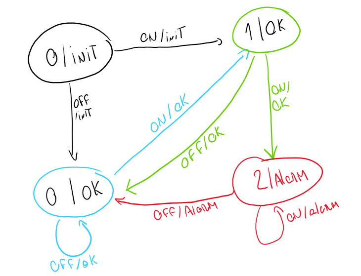

This system is receptive, non-deterministic and it is not memoryless.



\[ \mathcal I (f) =\{x/x > 732\}\\ \mathcal I(g) = \{x/x < 200\} \]
\[ \pi \models g \Rightarrow FGf\\ \pi \models g \Rightarrow \pi\models FGf\\ \pi(0) \in I(g) \Rightarrow \exists i \in \mathbb{N}_0 / \pi^i \models Gf\\ x_0 < 200 \Rightarrow \exists i\in \mathbb{N}_0 / \forall j \in \mathbb{N}_0 / \pi^{i+j} \models f\\ x_0 < 200 \Rightarrow \exists i\in \mathbb{N}_0 / \forall j \in \mathbb{N}_0 / \pi^{i+j}(0) \in \mathcal I(f) \\ x_0 < 200 \Rightarrow \exists i\in \mathbb{N}_0 / \forall j \in \mathbb{N}_0 / x_{i+j}>732 \]
$$ G[f Fg] \ i _0/ ^if ^i Fg\ i _0/ [ ^i(0) I(f) j _0 / ^{i+j} g ]\ i _0/ [ x_i > 732 j _0 / ^{i+j} I(g) ]\
i _0/ [ x_i > 732 j 0 / x{i+j} < 200 ]\ $$
False. Counter Example: \[ \pi = (\text{green},\text{green},\dots,\text{green}) \]
False. Counter example: \[ \pi = (\text{green},\text{yellow},\text{red}, \dots,\text{green},\text{yellow},\text{red}) \]
True. $$ F \ F \ (0) i _0 / ^i \
i _0 / ^i \ i _0 / ^i\ $$
### D)
False. Counter example: \[ \pi = (\text{green},\text{yellow},\text{red},\text{green},\text{green},\dots,\text{green}) \]
True. $$ G[ X ]\ i _0 / ^i ^i X \
i _0 / ^i(0) I() ^{i+1} \ i _0 / ^i(0) I() ^{i+1} I()\ $$ If \(\pi^i(0) \not \in \mathcal I(\text{yellow})\), the formula is valid.
if ^i(0) I() then the only possible connection is to the state \(\text{red}\), causing \(\pi^{i+1}(0) \in \mathcal I(\text{red})\), thus the formula will be true.
False. $$ \ U\
i / ^i j < i, ^j \ \[ From here I can create a counter example: \] = (, ,) $$ Here we can see that there if \(\pi(0) \models \text{green}\), then there won’t exists an \(i\in \mathbb{N}_0/ \pi^i \models \text{yellow}\) because it is constantly looping around \(\text{green}\).